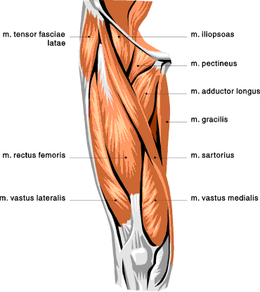
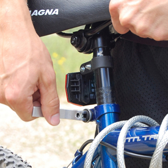
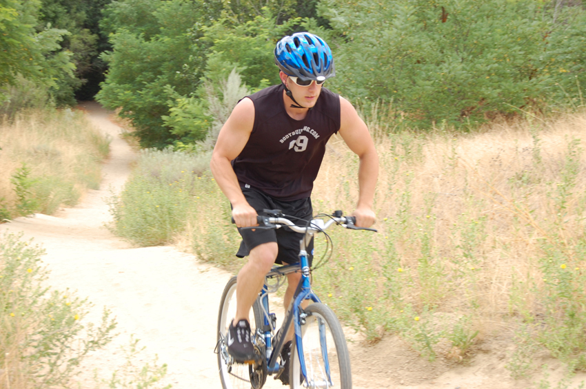
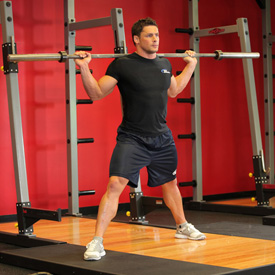
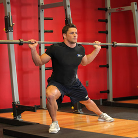
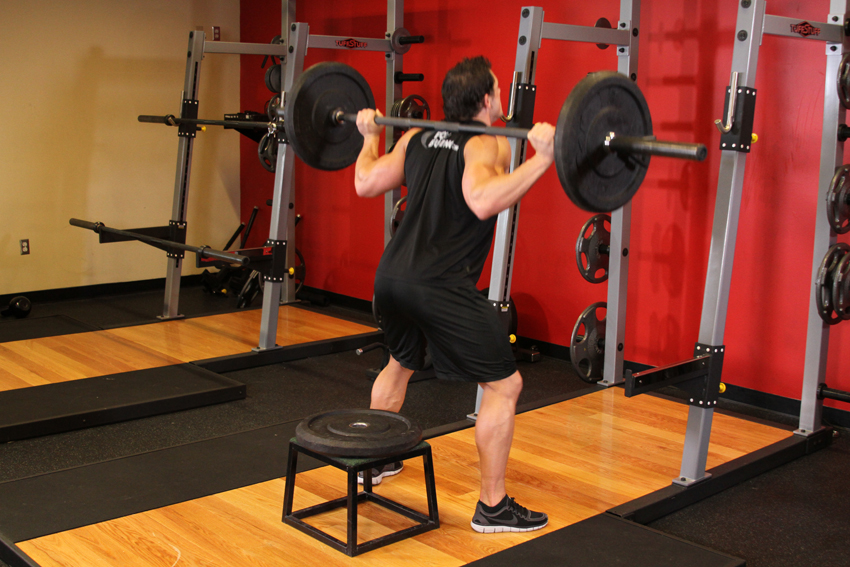
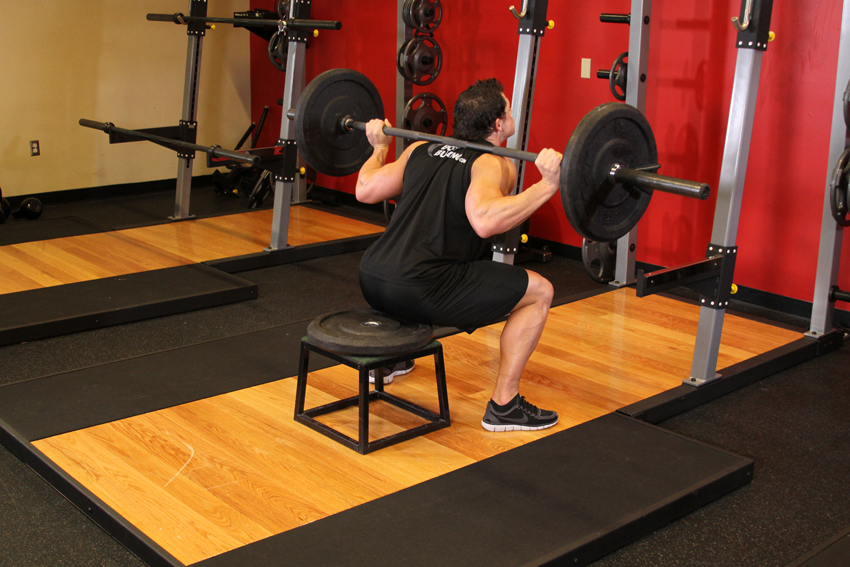
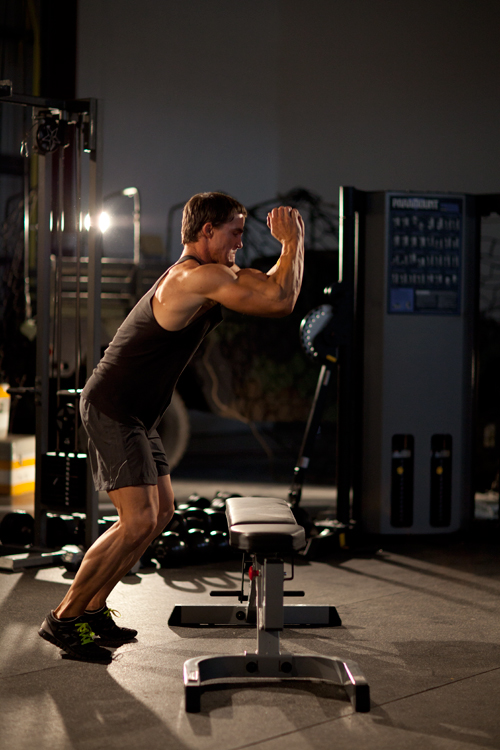
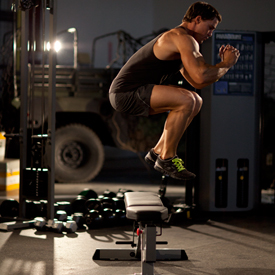

<!DOCTYPE html PUBLIC "-//W3C//DTD XHTML 1.0 Strict//EN" "http://www.w3.org/TR/xhtml1/DTD/xhtml1-strict.dtd">
<!--
Design by Free CSS Templates
http://www.freecsstemplates.org
Released for free under a Creative Commons Attribution 2.5 License

Name       : Open-Air
Description: A two-column, fixed-width design with dark color scheme.
Version    : 1.0
Released   : 20120818

-->
<html xmlns="http://www.w3.org/1999/xhtml"/>
<?php
session_start();
include('mygymdbConnect.php');
include('SignUp.php');
?>
<html>
    <head>
        <title> MyGym</title>
        <div style="position :absolute;top:20px;left:40px">
            <p><h2>MY<br/> 
                    GYM 
                    <br/></h2></p></div>
        <div style="position: absolute ;left:  200px; top: 20px;"> </div>
        <div style="position:absolute;top:37%;left:35%"/>
        <link href="http://fonts.googleapis.com/css?family=Oswald:400,300" rel="stylesheet" type="text/css" />         

        <link href="style.css" rel="stylesheet" type="text/css" media="screen" />
        <a href="home.php" style="text-decoration: none;color: black;font:serif;font-weight: bold;  ">Home |</a>
        <a href="About.html" style="text-decoration: none;color: black;font:serif;font-weight: bold;  ">About |</a>
        <a href="sign up.html" style="text-decoration: none;color: black;font:serif;font-weight: bold;  ">Sign up |</a>
        <a href="Activities.html" style="text-decoration: none;color: black;font:serif;font-weight: bold;  ">Activities |</a>
        <a href="Trainers.html" style="text-decoration: none;color: black;font:serif;font-weight: bold;  ">Trainers |</a>
        <a href="classes.html" style="text-decoration: none;color: black;font:serif;font-weight: bold;  ">Classes |</a>
        <a href="Training.html" style="text-decoration: none;color: black;font:serif;font-weight: bold;  ">Train |</a>   

    </head>

    <body>
        <div style="position: absolute;left: -300px">
            <table  cellpadding="10" cellspacing="10" height="400px" width="1200px">
                <tr><td></img></td>
                    <td><b>Description</b><br></br>The muscles of the knee include the quadriceps,
                        hamstrings, and a few other muscles. These muscles help extend, flex, and rotate the knee. 
                        The large, fleshy group of muscles called the quadriceps femoris occupies the front and sides of 
                        the thigh and is the primary extensor of the knee. The four parts (rectus femoris, vastus lateralis, 
                        vastus medialis, and vastus intermedius) of these muscles attach to the patellar tendon, which passes 
                        over the front of the knee and attaches to the knee cap
                        </table></div>
                        <div style="position: absolute;left: -200px;top: 500px" >
                            <table border="2"  cellpadding="10" cellspacing="10" align="center">
                                <tr><td><b>EXERCISES</b></td></tr>
                                <tr><td></img></br>
                                        </img></td>
                                    <td><b>Bicycling</b>
                                        </br>1-To begin, seat yourself on the bike and adjust the seat to your height.
                                        Wear protective gear to avoid possible injury. Ensure that you are courteous to vehicles and pedestrians, and that you obey the rules of the road.
                                        Cycling offers convenience, cardiovascular benefits, and has less impact than other activities. A 150 lb person will burn about 280 calories cycling at a moderate rate for 30 minutes, compared to 450 calories or more running.
                                    </td>
                                </tr>
                                <tr><td></img></br>
                                        </img></td>
                                    <td><b>Barbell Side Split Squat</b>
                                        </br>1-Stand up straight while holding a barbell placed on the back of your shoulders (slightly below the neck). Your feet should be placed wide apart with the foot of the lead leg angled out to the side. This will be your starting position.
                                        </br>2-Lower your body towards the side of your angled foot by bending the knee and hip of your lead leg and while keeping the opposite leg only slightly bent. Breathe in as you lower your body.
                                        </br>3-Return to the starting position by extending the hip and knee of the lead leg. Breathe out as you perform this movement.
                                        </br>4-After performing the recommended amount of reps, repeat the movement with the opposite leg.
                                    </td>
                                </tr>
                                <tr><td></img></br>
                                        </img></td>
                                    <td><b>Barbell Squat To A Bench</b>
                                        </br>1-This exercise is best performed inside a squat rack for safety purposes. To begin, first place a flat bench or a box behind you. The flat bench is used to teach you to set your hips back and to hit depth.
                                        </br>2-Then, set the bar on a rack that best matches your height. Once the correct height is chosen and the bar is loaded, step under the bar and place the back of your shoulders (slightly below the neck) across it.
                                        </br>3-Hold on to the bar using both arms at each side and lift it off the rack by first pushing with your legs and at the same time straightening your torso.
                                        </br>4-Step away from the rack and position your legs using a shoulder width medium stance with the toes slightly pointed out. Keep your head up at all times as looking down will get you off balance and also maintain a straight back. This will be your starting position. (Note: For the purposes of this discussion we will use the medium stance described above which targets overall development; however you can choose any of the three stances discussed in the foot stances section).
                                        </br>5-Begin to slowly lower the bar by bending the knees and sitting your hips back as you maintain a straight posture with the head up. Continue down until you slightly touch the bench behind you. Inhale as you perform this portion of the movement. Tip: If you performed the exercise correctly, the front of the knees should make an imaginary straight line with the toes that is perpendicular to the front. If your knees are past that imaginary line (if they are past your toes) then you are placing undue stress on the knee and the exercise has been performed incorrectly.
                                        </br>6-Begin to raise the bar as you exhale by pushing the floor with the heel of your foot as you straighten the legs and extend the hips to go back to the starting position.

                                    </td>
                                </tr>
                                <tr><td></img><br></br>
                                        </img>  </td>
                                    <td><b>Bench Jump</b>
                                        </br>1-Begin with a box or bench 1-2 feet in front of you. Stand with your feet shoulder width apart. This will be your starting position.
                                        </br>2-Perform a short squat in preparation for the jump; swing your arms behind you.
                                        </br>3-Rebound out of this position, extending through the hips, knees, and ankles to jump as high as possible. Swing your arms forward and up.
                                        </br>4-Jump over the bench, landing with the knees bent, absorbing the impact through the legs.
                                        </br>5-Turn around and face the opposite direction, then jump back over the bench.

                                </tr>
                            </table>
                        </div>
                        </body>
                        </html>